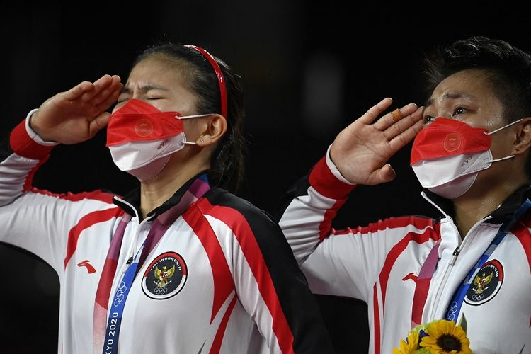

Raih Medali Emas di Olimpiade Tokyo, Greysia Polii Ukir 2 Rekor IstimewaKOMPAS.com- Pebulu tangkis putri Indonesia, Greysia Polii, mengukir dua rekor istimewa seusai memenangi medali emas di Olimpiade Tokyo 2020. Greysia Polii bersama pasangannya Apriyani Rahayu meraih medali emas di Olimpiade Tokyo 2020 setelah mengalahkan Chen Qing Chen/Jia Yi Fan (China) di final ganda putri. Kemenangan diraih Greysia/Apriyani lewat dua gim langsung dalam laga yang berlangsung di Musashino Forest Sport Plaza, Senin (2/8/2021) siang WIB. Setelah menjalani duel ketat, Greysia/Apriyani dapat mengunci kemenangan dengan skor 21-19 dan 21-15 dalam waktu 55 menit. Baca juga: Hasil Final Badminton Olimpiade Tokyo, Greysia/Apriyani Raih Medali Emas! Hasil ini membuat Indonesia sukses menuai medali emas pertama di Olimpiade Tokyo 2020. Terkhusus Greysia Polii, pencapaian ini membuat dia mencetak dua rekor istimewa di Olimpiade. Greysia Polii yang saat ini berusia 33 tahun 356 hari menjadi peraih medali emas tertua di cabor badminton Olimpiade. Dia memecahkan rekor yang sebelumnya dipegang eks tunggal putri China, Zhang Ning (33 tahun 89 hari), saat meraih medali emas di Beijing 2008. Greysia juga sekarang menjadi peraih medali wanita tertua dalam pesta olahraga multicabang tersebut. Tak hanya mengukir rekor pribadi, Greysia yang berduet dengan Apriyani berhasil mencatatkan sejarah untuk Indonesia. Greysia/Apriyani adalah ganda putri Indonesia pertama yang berhasil meraih medali emas di Olimpiade. Indonesia sekarang telah menyabet medali dari seluruh nomor cabor badminton Olimpiade. |
| ©Kompas.com |